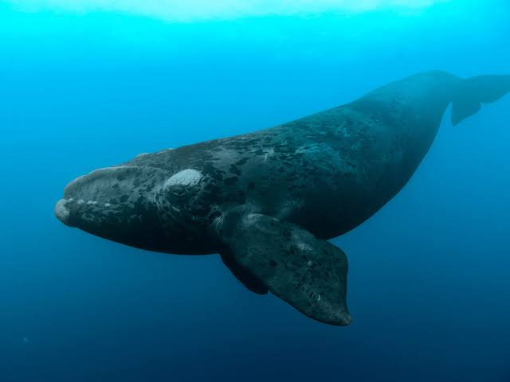

Los mamíferos son un grupo de animales que engloba seres muy diversos: desde la enorme ballena azul al murciélago. Aún así, todos ellos comparten una característica común: tienen unas glándulas mamarias productoras de leche mediante las que alimentan a las crías.
Animales mamiferos
Elefante
Son animales mamíferos, exclusivamente herbívoros cuya característica principal además del gran tamaño– es su larga trompa y sus enormes orejas. Se organizan en manadas de unos 20 miembros, miden casi 4 metros los ejemplares más grandes y pueden llegar a pesar más de 6.000 kilos.

León
El león es el segundo felino viviente más corpulento después del tigre. Con unas patas potentes, una fuerte mandíbula y unos colmillos de ocho centímetros, el león puede matar a presas de gran tamaño. Su coloración va desde un color castaño claro hasta un marrón amarillento, rojizo u ocre oscuro.

Ballena
Es el mamífero más grande que existe en la Tierra, la longitud media de una ballena azul es de 25m y puede crecer hasta los 30m. Pesa alrededor de unas 90 a 125 toneladas y al igual que el resto de los rorcuales, las hembras son algo más grandes que los machos.
